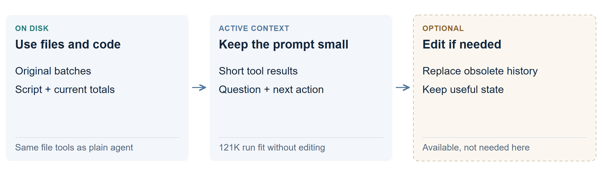

Files with context editing available
Combine an external file archive with CLM’s prompt editing. Tools read saved records; editing can make room in the messages sent to the model next. Both use the same Qwen3.8-27B model.

What does each part do?
For the apple ledger, the agent saves the batch to disk and runs a script to update “apples: 11.” It can leave the original records in files while showing the model only a short result.
Separately, it is allowed to rewrite its live history: for example, removing an obsolete tool result after its useful information is saved. That changes the next prompt, not the source file or the model’s trained weights.
The model is told it may save files and how to edit its transcript. It chooses when to use either tool. The archive stays on disk; the active prompt’s numerical state stays in GPU memory. How this differs from original and revised CLM.
Did it actually need to self-edit?
No context edit was needed in the 121K run. Files kept the working context small enough. “Files + self-editing” described the tools available to the agent, not evidence that editing caused its speed.
| Trial | Correct | Time |
|---|---|---|
| 121K ledger | 24/24 | 1.9 min |
| 478K stream | 24/24 | 1.3 min |
The matching files without context editing run also got 24/24 in 1.9 minutes on the 121K task. On the 478K stream, both agents again answered all 24 correctly.
When could the combination help?
A long investigation might accumulate many searches, plans and tool replies even with its source documents on disk. Editing could keep the working conversation focused while the files retain the originals.
What are the tradeoffs?
It adds another way to lose a useful detail from the active conversation. The agent must know what is safely saved and how to find it again. The short ledger runs do not establish an extra benefit from adding editing to file tools.
Technical details: interpreting the comparison
The 121K files-and-editing arm used the original CLM agent with a 32K budget. It generated about 7K tokens and peaked at 8.2K active context. The 478K run generated about 5K and peaked at 7.1K; its elapsed time was 1.3 minutes versus 1.9 for the plain file agent.
These are individual task runs with different trajectories. Their times do not isolate the cost or benefit of a context edit. Both approaches saved batches and computed results with code.
Results and trajectories · Original comparison · Model setup and actual prompts